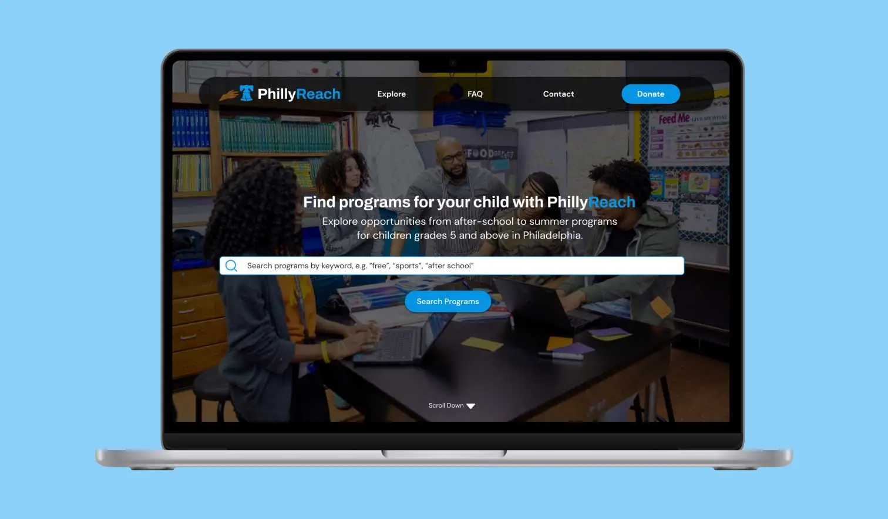
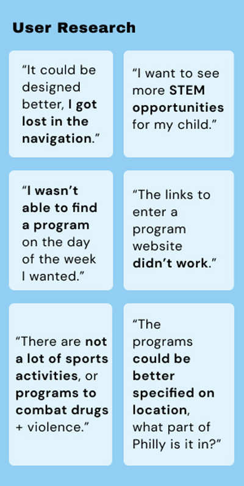
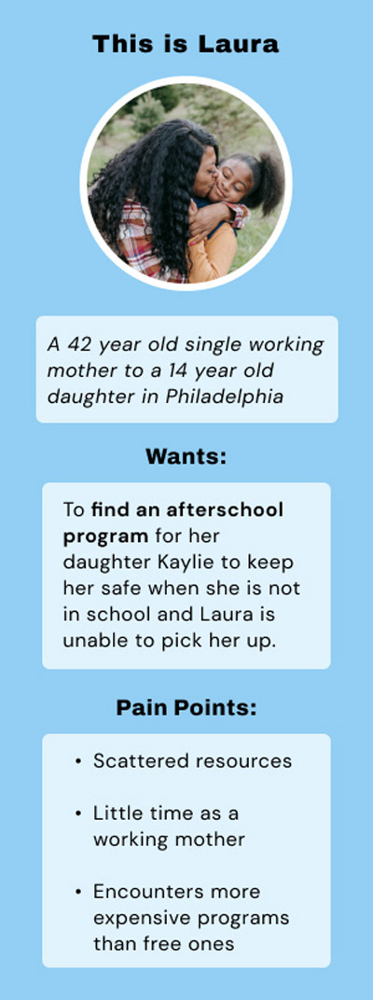
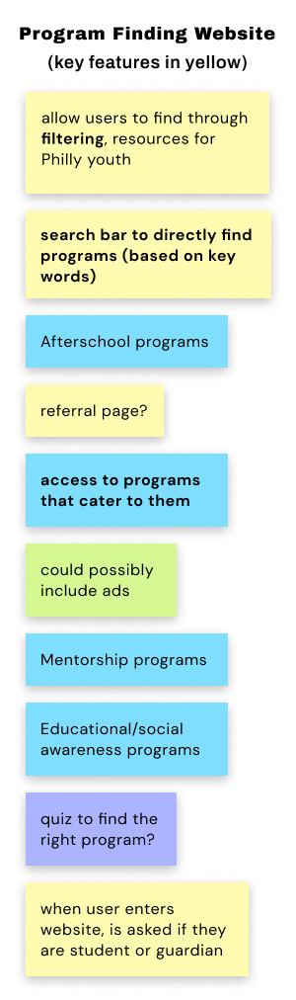
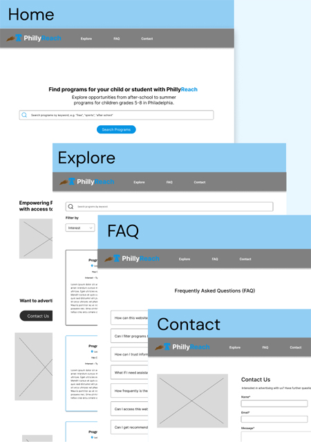
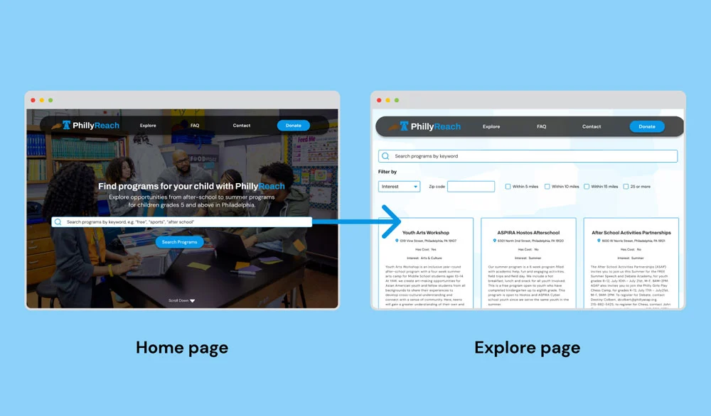
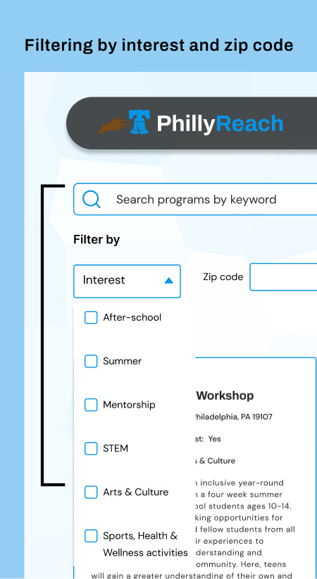
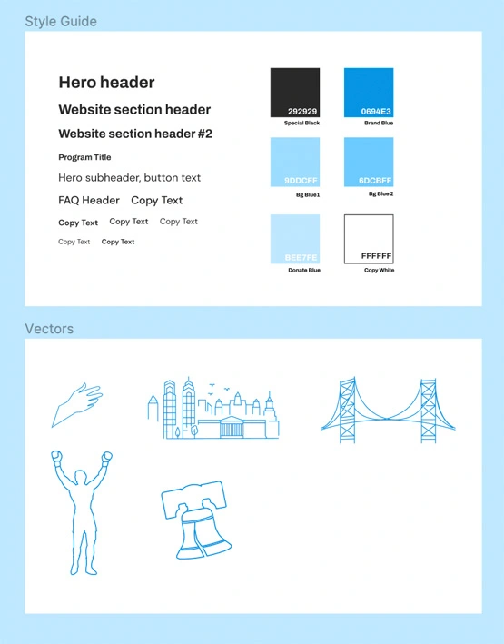
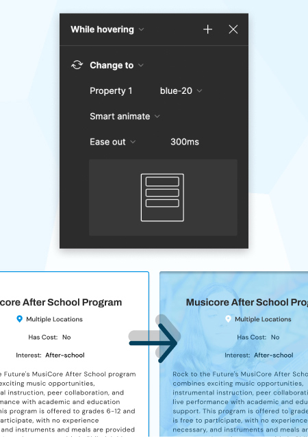

MVP Website Design
Overview
During my 10-week internship at Coded By Kids, I was the sole designer working within a cross-functional team made of a project manager and two developers, where I made significant contributions by ideating on and validating a critical issue within the Philadelphia community, ultimately leading to the creation of a highly-impactful MVP to address the problem.
Philadelphia needs to keep its youth away from crime
Together, me and my team noticed and capitalized on a need to connect parents in Philadelphia with accessible after-school programs to keep their children safe from violence.

The solution that we came up with is PhillyReach, a program-finding desktop website for working parents in Philadelphia.
- As our product seeks to help low to middle-income parents find affordable programs efficiently, PhillyReach offers a wide variety of educational programs available for middle-grade youth in Philadelphia.
The existing solutions aren't accessible enough
First, I engaged in desk and user research with my team to better identify our problem. What solutions exist to solve this need, and how can they be better accessed?

- There are multiple non-profit organization websites that list their educational programs in Philadelphia as well as a government website that acts as a database for after-school care in the city.
However, parents complain these program-finding websites do not provide enough programs and could be organized better to find the right program that fits their child's needs and interests.
After talking to parents in Philadelphia and utilizing our team's own connections to middle schools in the area, we realized a bigger need to connect free after-school programs with working parents, who often do not have the means to pay high program fees.

This is demonstrated with Laura, our user persona who is a single working mother struggling from a lack of free time and scattered resources for support.
Ideating features for our product
Recognizing the scarcity of resources catering to Philadelphia's youth, who are often vulnerable to crime after school, we were driven to develop a website that addresses this need for the hardworking parents in Philadelphia, who need a safe place for their kids to stay after school that comes with enriching educational opportunities.

When brainstorming core features of our website, we knew we wanted a search bar and filtering system to provide opportunities for youth in Philly.
WireframesCreating low-fidelity wireframes
I created the initial structure for our website here and was given feedback to add a revenue model to my design. In the final design, I added space for advertisements and a donate page.

Proposed Solution: Final Solution
Our proposed solution to this problem, PhillyReach, is a centralized program-finding website that allows parents to utilize a search bar and filtering system to navigate through affordable after-school care.

- From the search bar on our Home page, parents are directed to the Explore page containing a database of programs in Philly.
- Parents can freely explore the program profiles and be taken to a direct link to sign up once they click a card they are interested in.
Overall, they can also expand on their searching through the search bar on the Explore page, or the two filter options provided which customize programs based on the interest or focus area of a program, as well as how far a program is to a parent's zip code.
Why did I choose to filter this way?
- Two common factors a parent considers when searching for a program is how far it is from them, and what interest areas it provides to enrich their kids, whether it's STEM and sports, to art and mentorship opportunities.

The users informed my final design

- While designing this website, I wanted parents to understand quickly the type of services we provide. I placed a focus on light blue and white in our branding to create a modern look and feel.
- Blue in particular is used in many educational websites, which is why it's the main color of PhillyReach, and a prominent color explored in my Figma color styles.
- I also customized the website through vectors I personally made of the city's famous icons, from the Rocky statue and the Liberty Bell to the Ben Franklin Bridge.
- I placed a focus on ease of use and accessibility on the website by taking into consideration the website's fonts and font sizes, color contrast, button sizes, as well as following a grid system in the explore page. This culminated in a consistent, sleek design.
PhillyReach provides a quick user flow
From my wireframes to the final mock-up, I iteratively created an experience that would lessen the steps parents in Philly often take to find programs. With just two clicks, a parent can find a program and sign up for it through the organization website.
With Figma smart animate, I was able to enhance the user's journey by creating quick interactions that appear smoothly when the user hovers over buttons and program cards, and encourages them to explore the website further.
To get a better idea of my design, I urge you to explore my prototype.

What I learned from this project
Despite the efforts I placed in this project, I feel more could be done to solve this problem. At week 9 of the design process, I presented my work to industry professionals at Comcast as part of my internship program in order to receive critiques. The advice I received back was not only kind but also very insightful in ways I could have expanded on my design.
- The explore page could have been improved on through lists rather than a grid system of cards, by additional filters, as well as a map showing parents visually where programs are located.
- I was also urged to consider creating a page of additional resources to connect parents to more program finders, as well as grants and scholarships.
Gaining perspective from experts helped extremely, making me wish I had met with them earlier in the design process. Although this was my first internship, I should have asked more questions early in the process to create a more informed design.
If anything, this experience has taught me that the most successful products are the ones that connect people, and that that is done well by talking extensively with the people who are affected by the issue. Now more than ever I am excited by UX research and how it works to create interfaces that understand their users.